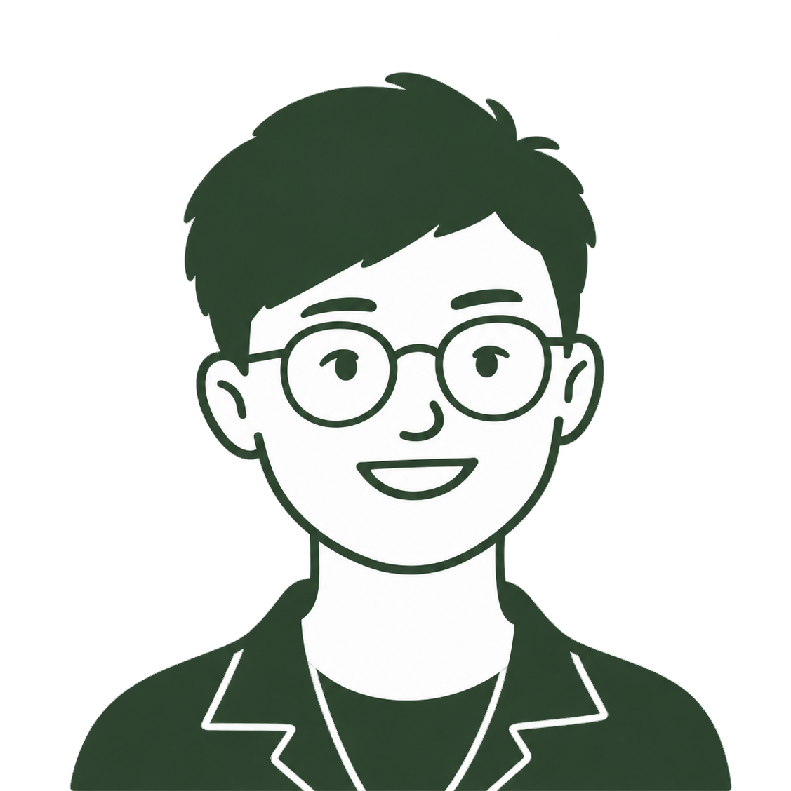

Sustainability · Data · Cities
Hello! I'm Tanya, a postdoctoral researcher at Leiden University's Institute of Environmental Sciences (CML). I use spatial data science to help make cities more sustainable, with a focus on how we source and use building materials.
Most of my work looks at circular economy and bio-based materials in construction. This started during my PhD at TU Delft, where I researched how circular hubs can be categorised and sited to support urban manufacturing, and continued at MIT's Senseable City Lab, where I mapped the logistics impacts and optimized the scale of circular hubs in Amsterdam. Right now, I'm working on the RAW project, calculating the environmental impact of digitally fabricated bio-based construction products with LCA.
Alongside this research, I like building small spatial-data side projects for fun — like mapping the shortest shaded cycling route across Delft one summer, or building a Lego map of Hong Kong using open geo-data. I also occasionally write about the messier, more human side of academic life, including seven attitudes that got me through my PhD and the productivity tools that actually made it enjoyable.
Below are some tools I've made — feel free to take a look!
Tools02 items
Click anywhere in Europe to site a 3D-printing facility, then set a feedstock travel-distance limit to see local material availability, climate, and indicative process impacts.
For RAW project fabrication partners: see the environmental impact of your process today, sketch an optimised version, and explore which individual changes matter most before committing to them on the shop floor.
New tools get added here as they're built — this space is reserved for whatever comes next.